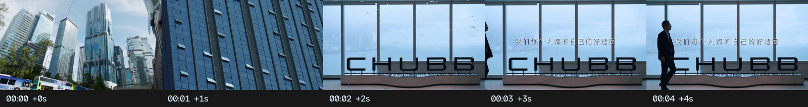
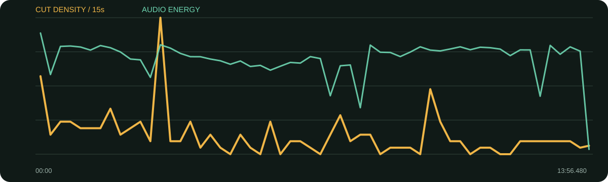

景别 / 机位系统
- 访谈有宽/中/近三档，企业空间有推拉/跟拍/横移
- 人物行走、窗前轮廓、会议互动让“职业行动”可见
- B-roll按公司、角色、业务、团队、未来分箱
- 章节卡清晰切分13分钟信息
这是13条里最完整的企业人物模板：城市/建筑/行走/会议先建立平台，三档访谈讲逻辑，团队/办公/客户/海景B-roll持续证明，章节卡和关键词只在认知转折处出现。
口径说明：候选镜头由场景检测生成，闪光、人物快速动作、数字推拉和图形变化都可能误触发；逐秒重点由真实原片、字幕语义和全片总览人工选择。字幕来自本地中文语音识别，人名、品牌名与行业词可能有误，不把自动转写当逐字稿。
每张总览按时间顺序覆盖全片。它用于检查章节、B-roll密度和景别回环；详细切点以候选镜头表与下面的逐秒重点为准。
| 时间 | 章节 | 内容推进 | 剪辑任务 |
|---|---|---|---|
| 00:00–00:24 | 企业与人物世界建立 | 城市、品牌、行走、会议与身份。 | 运动B-roll＋细字标题，不急着正面采访。 |
| 00:24–03:02 | 新平台与新视角 | 安达人寿打开新门，香港与内地市场差异。 | 访谈三景别配城市/办公证据。 |
| 03:02–06:00 | 离开舒适圈 | 离开20多年平台、面试与重新开始。 | 个人经历段减少企业口号，多保留表情。 |
| 06:00–08:12 | 公司实力与职责 | 集团实力、职位、大湾区战略。 | 数据/职位关键词与会议B-roll增强理解。 |
| 08:12–10:12 | 人才标准 | 代理人门槛、心理素质、诚信。 | 整屏章节卡开启人才主题。 |
| 10:12–12:36 | 平台能力与解决方案 | 全球经验、本地化、财寿险与资管协同。 | 业务B-roll分担高密度术语。 |
| 12:36–13:57 | 投入人才与价值收束 | 资本投入、尊重代理人、客户价值。 | 回到人与团队，避免以纯品牌口号结束。 |
证据型B-roll最丰富：城市/楼宇证明地域与平台，会议/演讲证明角色，团队/办公证明组织，客户与业务画面证明行动，海景/城市用于未来感收束。
综合音轨能量较平稳，长片中章节卡/空镜可见声能变化；未分离人声和配乐，不判断具体配乐编曲。
每张长图从左到右为真实的连续秒点。重点不是记住截图，而是看清一组画面怎样“进入—完成任务—退出”。

画面事实先交代公司所在世界，再揭示人物。
怎么复现企业片开头按地点—品牌—人物行动排序。
画面事实运动镜头让职业身份可见，半透明字不抢画面。
怎么复现拍人物至少准备走、看、谈、写四种动词。
画面事实硬信息与实物同框，提高可信度。
怎么复现数据出现时尽量同时给可核验的标识或环境。
画面事实经过空间和行动后再让人物自我介绍。
怎么复现不要第一秒就坐着说“大家好我是”。
画面事实公司介绍转为个人风险，景别更近。
怎么复现企业片必须有个人代价，否则只有宣传没有人物。
画面事实整屏颜色清空上一章的术语负担。
怎么复现章节卡只放一个问题或结论，并保持品牌色。
画面事实业务概念由真实工作场景承接。
怎么复现B-roll必须出现具体动作，避免只拍握手和空楼。
画面事实最后回到人而非公司规模，情绪更可信。
怎么复现品牌片结尾用“谁因此变好”代替再说一遍口号。

| 观察项 | 15秒窗口 |
|---|---|
| 视觉最密 | 03:00–03:15（84.0 候选切镜/分）；00:00–00:15（48.0 候选切镜/分）；09:45–10:00（40.0 候选切镜/分） |
| 视觉最缓 | 04:45–05:00（0.0 候选切镜/分）；05:30–05:45（0.0 候选切镜/分）；06:00–06:15（0.0 候选切镜/分） |
| 综合音轨最强 | 00:00–00:15（-15.1 dBFS）；03:00–03:15（-18.9 dBFS）；08:15–08:30（-19.0 dBFS） |
“视觉最密/最缓”基于自动候选切镜；“综合音轨最强”包含人声、环境声、音乐和音效，不能单独当作配乐音量。平均综合音轨为 -23.37 dBFS，最高15秒窗口 -15.06 dBFS，最低15秒窗口 -53.40 dBFS。
| # | 入点 | 出点 | 时长 | 代表帧秒点 | 证据 |
|---|---|---|---|---|---|
| 1 | 00:00.000 | 00:00.520 | 0.52s | 0.234000s | 自动候选 |
| 2 | 00:00.520 | 00:00.760 | 0.24s | 0.628000s | 自动候选 |
| 3 | 00:00.760 | 00:01.320 | 0.56s | 1.012000s | 自动候选 |
| 4 | 00:01.320 | 00:01.720 | 0.40s | 1.500000s | 自动候选 |
| 5 | 00:01.720 | 00:05.280 | 3.56s | 2.470000s | 自动候选 |
| 6 | 00:05.280 | 00:05.640 | 0.36s | 5.442000s | 自动候选 |
| 7 | 00:05.640 | 00:05.920 | 0.28s | 5.766000s | 自动候选 |
| 8 | 00:05.920 | 00:08.360 | 2.44s | 6.670000s | 自动候选 |
| 9 | 00:08.360 | 00:10.160 | 1.80s | 9.110000s | 自动候选 |
| 10 | 00:10.160 | 00:11.400 | 1.24s | 10.718000s | 自动候选 |
| 11 | 00:11.400 | 00:12.520 | 1.12s | 11.904000s | 自动候选 |
| 12 | 00:12.520 | 00:13.640 | 1.12s | 13.024000s | 自动候选 |
| 13 | 00:13.640 | 00:17.400 | 3.76s | 14.390000s | 自动候选 |
| 14 | 00:17.400 | 00:23.720 | 6.32s | 18.150000s | 自动候选 |
| 15 | 00:23.720 | 00:25.680 | 1.96s | 24.470000s | 自动候选 |
| 16 | 00:25.680 | 00:28.640 | 2.96s | 26.430000s | 自动候选 |
| 17 | 00:28.640 | 00:30.560 | 1.92s | 29.390000s | 自动候选 |
| 18 | 00:30.560 | 00:34.720 | 4.16s | 31.310000s | 自动候选 |
| 19 | 00:34.720 | 00:37.160 | 2.44s | 35.470000s | 自动候选 |
| 20 | 00:37.160 | 00:39.480 | 2.32s | 37.910000s | 自动候选 |
| 21 | 00:39.480 | 00:40.760 | 1.28s | 40.056000s | 自动候选 |
| 22 | 00:40.760 | 00:42.400 | 1.64s | 41.498000s | 自动候选 |
| 23 | 00:42.400 | 00:46.000 | 3.60s | 43.150000s | 自动候选 |
| 24 | 00:46.000 | 00:48.840 | 2.84s | 46.750000s | 自动候选 |
| 25 | 00:48.840 | 00:53.840 | 5.00s | 49.590000s | 自动候选 |
| 26 | 00:53.840 | 00:56.640 | 2.80s | 54.590000s | 自动候选 |
| 27 | 00:56.640 | 00:57.920 | 1.28s | 57.216000s | 自动候选 |
| 28 | 00:57.920 | 00:59.680 | 1.76s | 58.670000s | 自动候选 |
| 29 | 00:59.680 | 01:01.400 | 1.72s | 60.430000s | 自动候选 |
| 30 | 01:01.400 | 01:04.400 | 3.00s | 62.150000s | 自动候选 |
| 31 | 01:04.400 | 01:08.760 | 4.36s | 65.150000s | 自动候选 |
| 32 | 01:08.760 | 01:09.400 | 0.64s | 69.048000s | 自动候选 |
| 33 | 01:09.400 | 01:11.080 | 1.68s | 70.150000s | 自动候选 |
| 34 | 01:11.080 | 01:15.760 | 4.68s | 71.830000s | 自动候选 |
| 35 | 01:15.760 | 01:20.920 | 5.16s | 76.510000s | 自动候选 |
| 36 | 01:20.920 | 01:24.320 | 3.40s | 81.670000s | 自动候选 |
| 37 | 01:24.320 | 01:27.080 | 2.76s | 85.070000s | 自动候选 |
| 38 | 01:27.080 | 01:29.960 | 2.88s | 87.830000s | 自动候选 |
| 39 | 01:29.960 | 01:34.760 | 4.80s | 90.710000s | 自动候选 |
| 40 | 01:34.760 | 01:37.720 | 2.96s | 95.510000s | 自动候选 |
| 41 | 01:37.720 | 01:39.640 | 1.92s | 98.470000s | 自动候选 |
| 42 | 01:39.640 | 01:41.520 | 1.88s | 100.390000s | 自动候选 |
| 43 | 01:41.520 | 01:42.880 | 1.36s | 102.132000s | 自动候选 |
| 44 | 01:42.880 | 01:45.280 | 2.40s | 103.630000s | 自动候选 |
| 45 | 01:45.280 | 01:47.840 | 2.56s | 106.030000s | 自动候选 |
| 46 | 01:47.840 | 01:50.600 | 2.76s | 108.590000s | 自动候选 |
| 47 | 01:50.600 | 01:52.800 | 2.20s | 111.350000s | 自动候选 |
| 48 | 01:52.800 | 01:55.480 | 2.68s | 113.550000s | 自动候选 |
| 49 | 01:55.480 | 01:57.480 | 2.00s | 116.230000s | 自动候选 |
| 50 | 01:57.480 | 01:58.520 | 1.04s | 117.948000s | 自动候选 |
| 51 | 01:58.520 | 01:59.360 | 0.84s | 118.898000s | 自动候选 |
| 52 | 01:59.360 | 02:02.040 | 2.68s | 120.110000s | 自动候选 |
| 53 | 02:02.040 | 02:04.640 | 2.60s | 122.790000s | 自动候选 |
| 54 | 02:04.640 | 02:06.800 | 2.16s | 125.390000s | 自动候选 |
| 55 | 02:06.800 | 02:09.800 | 3.00s | 127.550000s | 自动候选 |
| 56 | 02:09.800 | 02:18.240 | 8.44s | 130.550000s | 自动候选 |
| 57 | 02:18.240 | 02:20.520 | 2.28s | 138.990000s | 自动候选 |
| 58 | 02:20.520 | 02:23.080 | 2.56s | 141.270000s | 自动候选 |
| 59 | 02:23.080 | 02:24.000 | 0.92s | 143.494000s | 自动候选 |
| 60 | 02:24.000 | 02:26.760 | 2.76s | 144.750000s | 自动候选 |
| 61 | 02:26.760 | 02:31.880 | 5.12s | 147.510000s | 自动候选 |
| 62 | 02:31.880 | 02:34.920 | 3.04s | 152.630000s | 自动候选 |
| 63 | 02:34.920 | 02:36.840 | 1.92s | 155.670000s | 自动候选 |
| 64 | 02:36.840 | 02:39.000 | 2.16s | 157.590000s | 自动候选 |
| 65 | 02:39.000 | 02:41.520 | 2.52s | 159.750000s | 自动候选 |
| 66 | 02:41.520 | 02:43.760 | 2.24s | 162.270000s | 自动候选 |
| 67 | 02:43.760 | 02:48.080 | 4.32s | 164.510000s | 自动候选 |
| 68 | 02:48.080 | 02:51.360 | 3.28s | 168.830000s | 自动候选 |
| 69 | 02:51.360 | 02:55.280 | 3.92s | 172.110000s | 自动候选 |
| 70 | 02:55.280 | 03:01.720 | 6.44s | 176.030000s | 自动候选 |
| 71 | 03:01.720 | 03:04.520 | 2.80s | 182.470000s | 自动候选 |
| 72 | 03:04.520 | 03:04.800 | 0.28s | 184.646000s | 自动候选 |
| 73 | 03:04.800 | 03:04.960 | 0.16s | 184.872000s | 自动候选 |
| 74 | 03:04.960 | 03:05.120 | 0.16s | 185.032000s | 自动候选 |
| 75 | 03:05.120 | 03:05.280 | 0.16s | 185.192000s | 自动候选 |
| 76 | 03:05.280 | 03:05.440 | 0.16s | 185.352000s | 自动候选 |
| 77 | 03:05.440 | 03:05.600 | 0.16s | 185.512000s | 自动候选 |
| 78 | 03:05.600 | 03:05.760 | 0.16s | 185.672000s | 自动候选 |
| 79 | 03:05.760 | 03:05.920 | 0.16s | 185.832000s | 自动候选 |
| 80 | 03:05.920 | 03:06.080 | 0.16s | 185.992000s | 自动候选 |
| 81 | 03:06.080 | 03:06.240 | 0.16s | 186.152000s | 自动候选 |
| 82 | 03:06.240 | 03:06.400 | 0.16s | 186.312000s | 自动候选 |
| 83 | 03:06.400 | 03:06.560 | 0.16s | 186.472000s | 自动候选 |
| 84 | 03:06.560 | 03:06.720 | 0.16s | 186.632000s | 自动候选 |
| 85 | 03:06.720 | 03:06.880 | 0.16s | 186.792000s | 自动候选 |
| 86 | 03:06.880 | 03:07.040 | 0.16s | 186.952000s | 自动候选 |
| 87 | 03:07.040 | 03:07.200 | 0.16s | 187.112000s | 自动候选 |
| 88 | 03:07.200 | 03:07.360 | 0.16s | 187.272000s | 自动候选 |
| 89 | 03:07.360 | 03:07.520 | 0.16s | 187.432000s | 自动候选 |
| 90 | 03:07.520 | 03:11.080 | 3.56s | 188.270000s | 自动候选 |
| 91 | 03:11.080 | 03:14.280 | 3.20s | 191.830000s | 自动候选 |
| 92 | 03:14.280 | 03:18.360 | 4.08s | 195.030000s | 自动候选 |
| 93 | 03:18.360 | 03:23.160 | 4.80s | 199.110000s | 自动候选 |
| 94 | 03:23.160 | 03:26.120 | 2.96s | 203.910000s | 自动候选 |
| 95 | 03:26.120 | 03:33.120 | 7.00s | 206.870000s | 自动候选 |
| 96 | 03:33.120 | 03:35.880 | 2.76s | 213.870000s | 自动候选 |
| 97 | 03:35.880 | 03:40.120 | 4.24s | 216.630000s | 自动候选 |
| 98 | 03:40.120 | 03:46.080 | 5.96s | 220.870000s | 自动候选 |
| 99 | 03:46.080 | 03:48.960 | 2.88s | 226.830000s | 自动候选 |
| 100 | 03:48.960 | 03:50.800 | 1.84s | 229.710000s | 自动候选 |
| 101 | 03:50.800 | 03:51.800 | 1.00s | 231.250000s | 自动候选 |
| 102 | 03:51.800 | 03:52.760 | 0.96s | 232.232000s | 自动候选 |
| 103 | 03:52.760 | 03:55.440 | 2.68s | 233.510000s | 自动候选 |
| 104 | 03:55.440 | 04:04.680 | 9.24s | 236.190000s | 自动候选 |
| 105 | 04:04.680 | 04:11.720 | 7.04s | 245.430000s | 自动候选 |
| 106 | 04:11.720 | 04:17.560 | 5.84s | 252.470000s | 自动候选 |
| 107 | 04:17.560 | 04:21.040 | 3.48s | 258.310000s | 自动候选 |
| 108 | 04:21.040 | 04:24.920 | 3.88s | 261.790000s | 自动候选 |
| 109 | 04:24.920 | 04:26.240 | 1.32s | 265.514000s | 自动候选 |
| 110 | 04:26.240 | 04:34.000 | 7.76s | 266.990000s | 自动候选 |
| 111 | 04:34.000 | 04:41.240 | 7.24s | 274.750000s | 自动候选 |
| 112 | 04:41.240 | 05:01.800 | 20.56s | 281.990000s | 自动候选 |
| 113 | 05:01.800 | 05:03.400 | 1.60s | 302.520000s | 自动候选 |
| 114 | 05:03.400 | 05:04.840 | 1.44s | 304.048000s | 自动候选 |
| 115 | 05:04.840 | 05:07.360 | 2.52s | 305.590000s | 自动候选 |
| 116 | 05:07.360 | 05:18.560 | 11.20s | 308.110000s | 自动候选 |
| 117 | 05:18.560 | 05:27.440 | 8.88s | 319.310000s | 自动候选 |
| 118 | 05:27.440 | 05:45.200 | 17.76s | 328.190000s | 自动候选 |
| 119 | 05:45.200 | 05:46.600 | 1.40s | 345.830000s | 自动候选 |
| 120 | 05:46.600 | 05:50.200 | 3.60s | 347.350000s | 自动候选 |
| 121 | 05:50.200 | 05:53.040 | 2.84s | 350.950000s | 自动候选 |
| 122 | 05:53.040 | 05:56.040 | 3.00s | 353.790000s | 自动候选 |
| 123 | 05:56.040 | 05:59.560 | 3.52s | 356.790000s | 自动候选 |
| 124 | 05:59.560 | 06:03.080 | 3.52s | 360.310000s | 自动候选 |
| 125 | 06:03.080 | 06:20.360 | 17.28s | 363.830000s | 自动候选 |
| 126 | 06:20.360 | 06:23.440 | 3.08s | 381.110000s | 自动候选 |
| 127 | 06:23.440 | 06:28.680 | 5.24s | 384.190000s | 自动候选 |
| 128 | 06:28.680 | 06:32.920 | 4.24s | 389.430000s | 自动候选 |
| 129 | 06:32.920 | 06:36.160 | 3.24s | 393.670000s | 自动候选 |
| 130 | 06:36.160 | 06:41.800 | 5.64s | 396.910000s | 自动候选 |
| 131 | 06:41.800 | 06:47.520 | 5.72s | 402.550000s | 自动候选 |
| 132 | 06:47.520 | 06:56.680 | 9.16s | 408.270000s | 自动候选 |
| 133 | 06:56.680 | 07:13.240 | 16.56s | 417.430000s | 自动候选 |
| 134 | 07:13.240 | 07:16.480 | 3.24s | 433.990000s | 自动候选 |
| 135 | 07:16.480 | 07:21.000 | 4.52s | 437.230000s | 自动候选 |
| 136 | 07:21.000 | 07:24.800 | 3.80s | 441.750000s | 自动候选 |
| 137 | 07:24.800 | 07:26.720 | 1.92s | 445.550000s | 自动候选 |
| 138 | 07:26.720 | 07:30.120 | 3.40s | 447.470000s | 自动候选 |
| 139 | 07:30.120 | 07:33.000 | 2.88s | 450.870000s | 自动候选 |
| 140 | 07:33.000 | 07:35.560 | 2.56s | 453.750000s | 自动候选 |
| 141 | 07:35.560 | 07:36.600 | 1.04s | 456.028000s | 自动候选 |
| 142 | 07:36.600 | 07:39.280 | 2.68s | 457.350000s | 自动候选 |
| 143 | 07:39.280 | 07:41.640 | 2.36s | 460.030000s | 自动候选 |
| 144 | 07:41.640 | 07:42.400 | 0.76s | 461.982000s | 自动候选 |
| 145 | 07:42.400 | 07:45.760 | 3.36s | 463.150000s | 自动候选 |
| 146 | 07:45.760 | 07:46.520 | 0.76s | 466.102000s | 自动候选 |
| 147 | 07:46.520 | 07:50.360 | 3.84s | 467.270000s | 自动候选 |
| 148 | 07:50.360 | 08:00.760 | 10.40s | 471.110000s | 自动候选 |
| 149 | 08:00.760 | 08:04.920 | 4.16s | 481.510000s | 自动候选 |
| 150 | 08:04.920 | 08:09.440 | 4.52s | 485.670000s | 自动候选 |
| 151 | 08:09.440 | 08:12.960 | 3.52s | 490.190000s | 自动候选 |
| 152 | 08:12.960 | 08:18.120 | 5.16s | 493.710000s | 自动候选 |
| 153 | 08:18.120 | 08:24.040 | 5.92s | 498.870000s | 自动候选 |
| 154 | 08:24.040 | 08:26.360 | 2.32s | 504.790000s | 自动候选 |
| 155 | 08:26.360 | 08:29.920 | 3.56s | 507.110000s | 自动候选 |
| 156 | 08:29.920 | 08:34.400 | 4.48s | 510.670000s | 自动候选 |
| 157 | 08:34.400 | 08:51.000 | 16.60s | 515.150000s | 自动候选 |
| 158 | 08:51.000 | 08:58.200 | 7.20s | 531.750000s | 自动候选 |
| 159 | 08:58.200 | 09:03.320 | 5.12s | 538.950000s | 自动候选 |
| 160 | 09:03.320 | 09:10.480 | 7.16s | 544.070000s | 自动候选 |
| 161 | 09:10.480 | 09:16.360 | 5.88s | 551.230000s | 自动候选 |
| 162 | 09:16.360 | 09:26.280 | 9.92s | 557.110000s | 自动候选 |
| 163 | 09:26.280 | 09:38.400 | 12.12s | 567.030000s | 自动候选 |
| 164 | 09:38.400 | 09:45.880 | 7.48s | 579.150000s | 自动候选 |
| 165 | 09:45.880 | 09:47.360 | 1.48s | 586.546000s | 自动候选 |
| 166 | 09:47.360 | 09:49.280 | 1.92s | 588.110000s | 自动候选 |
| 167 | 09:49.280 | 09:52.320 | 3.04s | 590.030000s | 自动候选 |
| 168 | 09:52.320 | 09:53.760 | 1.44s | 592.968000s | 自动候选 |
| 169 | 09:53.760 | 09:54.640 | 0.88s | 594.156000s | 自动候选 |
| 170 | 09:54.640 | 09:55.320 | 0.68s | 594.946000s | 自动候选 |
| 171 | 09:55.320 | 09:56.240 | 0.92s | 595.734000s | 自动候选 |
| 172 | 09:56.240 | 09:56.840 | 0.60s | 596.510000s | 自动候选 |
| 173 | 09:56.840 | 09:57.920 | 1.08s | 597.326000s | 自动候选 |
| 174 | 09:57.920 | 09:59.680 | 1.76s | 598.670000s | 自动候选 |
| 175 | 09:59.680 | 10:00.600 | 0.92s | 600.094000s | 自动候选 |
| 176 | 10:00.600 | 10:01.280 | 0.68s | 600.906000s | 自动候选 |
| 177 | 10:01.280 | 10:05.360 | 4.08s | 602.030000s | 自动候选 |
| 178 | 10:05.360 | 10:08.240 | 2.88s | 606.110000s | 自动候选 |
| 179 | 10:08.240 | 10:09.920 | 1.68s | 608.990000s | 自动候选 |
| 180 | 10:09.920 | 10:14.440 | 4.52s | 610.670000s | 自动候选 |
| 181 | 10:14.440 | 10:15.360 | 0.92s | 614.854000s | 自动候选 |
| 182 | 10:15.360 | 10:18.320 | 2.96s | 616.110000s | 自动候选 |
| 183 | 10:18.320 | 10:25.920 | 7.60s | 619.070000s | 自动候选 |
| 184 | 10:25.920 | 10:31.920 | 6.00s | 626.670000s | 自动候选 |
| 185 | 10:31.920 | 10:32.600 | 0.68s | 632.226000s | 自动候选 |
| 186 | 10:32.600 | 10:40.200 | 7.60s | 633.350000s | 自动候选 |
| 187 | 10:40.200 | 10:59.040 | 18.84s | 640.950000s | 自动候选 |
| 188 | 10:59.040 | 11:05.480 | 6.44s | 659.790000s | 自动候选 |
| 189 | 11:05.480 | 11:10.440 | 4.96s | 666.230000s | 自动候选 |
| 190 | 11:10.440 | 11:19.160 | 8.72s | 671.190000s | 自动候选 |
| 191 | 11:19.160 | 11:26.000 | 6.84s | 679.910000s | 自动候选 |
| 192 | 11:26.000 | 11:44.440 | 18.44s | 686.750000s | 自动候选 |
| 193 | 11:44.440 | 12:03.160 | 18.72s | 705.190000s | 自动候选 |
| 194 | 12:03.160 | 12:08.840 | 5.68s | 723.910000s | 自动候选 |
| 195 | 12:08.840 | 12:12.880 | 4.04s | 729.590000s | 自动候选 |
| 196 | 12:12.880 | 12:19.360 | 6.48s | 733.630000s | 自动候选 |
| 197 | 12:19.360 | 12:21.680 | 2.32s | 740.110000s | 自动候选 |
| 198 | 12:21.680 | 12:24.080 | 2.40s | 742.430000s | 自动候选 |
| 199 | 12:24.080 | 12:34.000 | 9.92s | 744.830000s | 自动候选 |
| 200 | 12:34.000 | 12:39.600 | 5.60s | 754.750000s | 自动候选 |
| 201 | 12:39.600 | 12:44.120 | 4.52s | 760.350000s | 自动候选 |
| 202 | 12:44.120 | 12:47.160 | 3.04s | 764.870000s | 自动候选 |
| 203 | 12:47.160 | 12:53.600 | 6.44s | 767.910000s | 自动候选 |
| 204 | 12:53.600 | 12:58.160 | 4.56s | 774.350000s | 自动候选 |
| 205 | 12:58.160 | 13:04.160 | 6.00s | 778.910000s | 自动候选 |
| 206 | 13:04.160 | 13:10.560 | 6.40s | 784.910000s | 自动候选 |
| 207 | 13:10.560 | 13:12.960 | 2.40s | 791.310000s | 自动候选 |
| 208 | 13:12.960 | 13:16.560 | 3.60s | 793.710000s | 自动候选 |
| 209 | 13:16.560 | 13:21.040 | 4.48s | 797.310000s | 自动候选 |
| 210 | 13:21.040 | 13:23.520 | 2.48s | 801.790000s | 自动候选 |
| 211 | 13:23.520 | 13:41.080 | 17.56s | 804.270000s | 自动候选 |
| 212 | 13:41.080 | 13:44.520 | 3.44s | 821.830000s | 自动候选 |
| 213 | 13:44.520 | 13:47.600 | 3.08s | 825.270000s | 自动候选 |
| 214 | 13:47.600 | 13:51.480 | 3.88s | 828.350000s | 自动候选 |
| 215 | 13:51.480 | 13:56.480 | 5.00s | 832.230000s | 自动候选 |